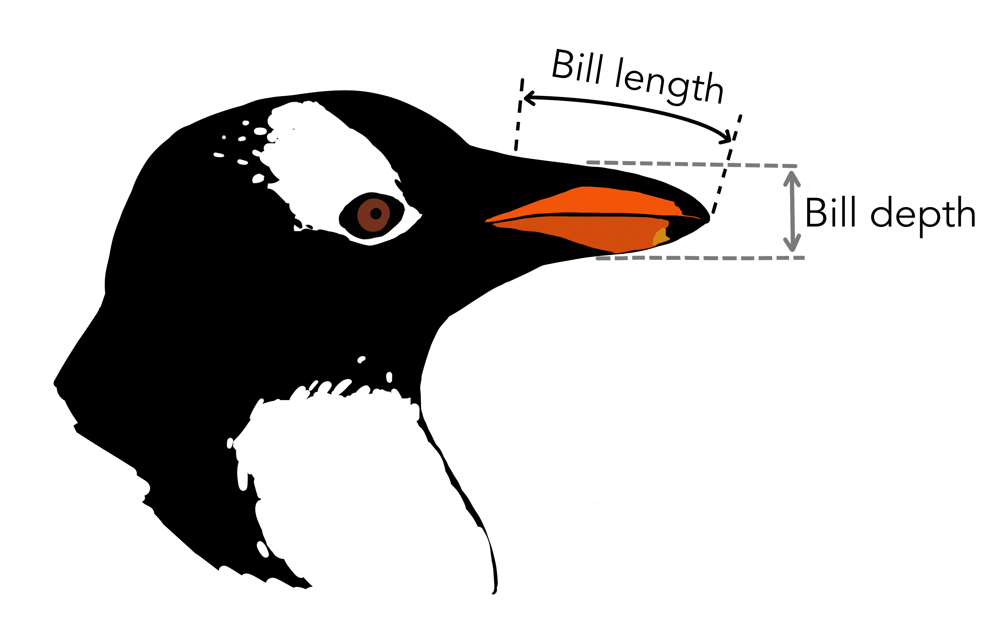
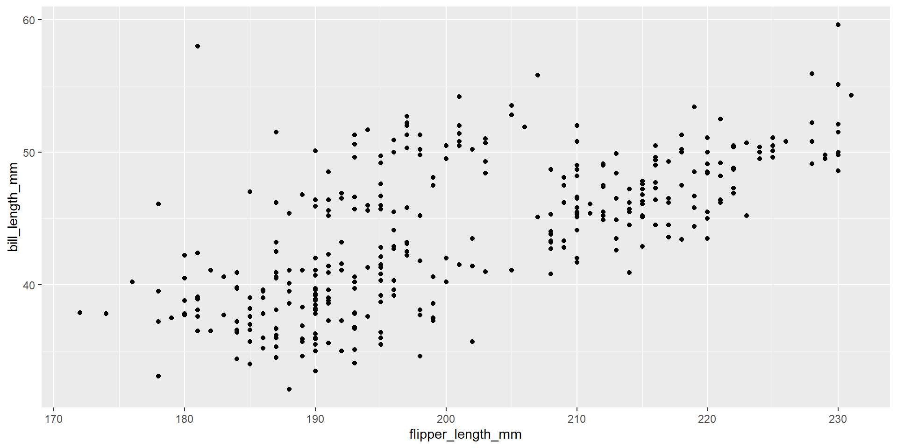
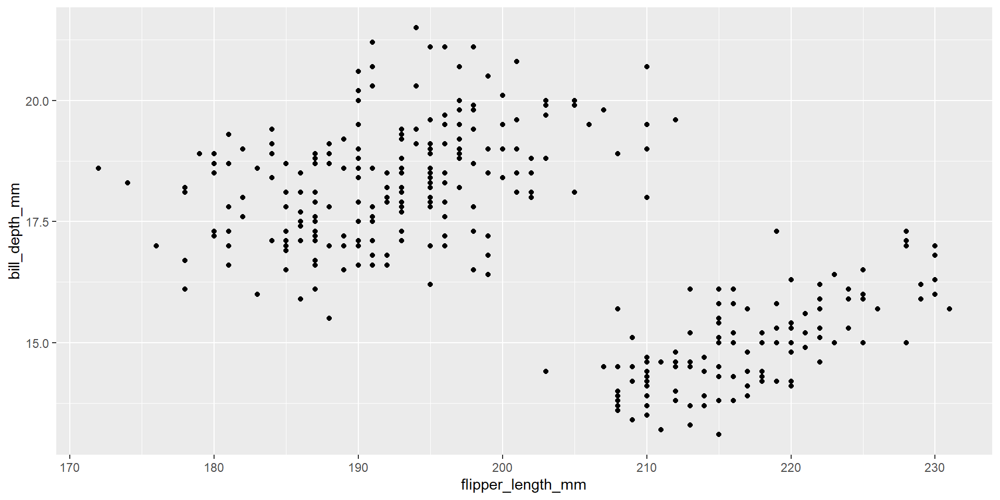
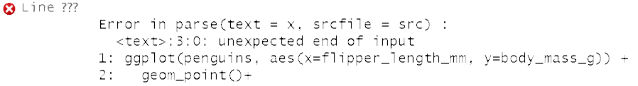
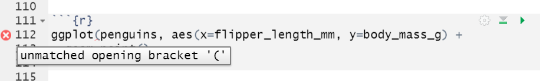

| Layer | Function | Explanation |
|---|---|---|
| Data | ggplot( ) | initialize plot and define dataset first |
| Aesthetics | aes( ) | how variables are mapped |
| Geometries | geom_*( ) | how data is conveyed |
| Facets | facet_*( ) | separates plots by categories |
| Statistics | stat_*( ) | statistical transformations |
| Coordinates | coord_*( ) | customize coord system |
| Theme | theme( ) | customize non-data components |
Data Visualization
Sections 2.0 - 2.3
Today’s goals
- Create a scatterplot
- Properly describe a scatterplot
- Change aesthetics such as color and shape in your plot
- Solve overplotting issues
Artwork by @allison_horst
The Grammar of Graphics
Defines a set of rules for constructing statistical graphics by combining different types of layers.
Only the first three layers are essential components that must be defined when building a graphic.
5NG#1: Scatterplots
Scatterplots allow you to visualize the relationship between 2 numerical variables.
. . .
Scatterplot syntax in R:
ggplot(data= my_data, mapping = aes(x = var1, y = var2)) +
geom_point(). . .
Scatterplot language: Construct a scatterplot of Y by X.
5NG#1: Scatterplots
When describing scatterplots…
- Look for pattern going from left to right.
- Classify association as positive, negative, or no association.
- Classify strength of association: strong, moderate, weak.
- Describe overall pattern: linear, nonlinear, etc.
- Check for overplotting issues.
The Palmer Penguins Dataset:
library(palmerpenguins)
glimpse(penguins)Rows: 344
Columns: 8
$ species <fct> Adelie, Adelie, Adelie, Adelie, Adelie, Adelie, Adel…
$ island <fct> Torgersen, Torgersen, Torgersen, Torgersen, Torgerse…
$ bill_length_mm <dbl> 39.1, 39.5, 40.3, NA, 36.7, 39.3, 38.9, 39.2, 34.1, …
$ bill_depth_mm <dbl> 18.7, 17.4, 18.0, NA, 19.3, 20.6, 17.8, 19.6, 18.1, …
$ flipper_length_mm <int> 181, 186, 195, NA, 193, 190, 181, 195, 193, 190, 186…
$ body_mass_g <int> 3750, 3800, 3250, NA, 3450, 3650, 3625, 4675, 3475, …
$ sex <fct> male, female, female, NA, female, male, female, male…
$ year <int> 2007, 2007, 2007, 2007, 2007, 2007, 2007, 2007, 2007…

Artwork by @allison_horst
Example 1: Describing scatterplots

ggplot(penguins, aes(x=flipper_length_mm, y=bill_length_mm)) +
geom_point()
glimpse(penguins)Rows: 344
Columns: 8
$ species <fct> Adelie, Adelie, Adelie, Adelie, Adelie, Adelie, Adel…
$ island <fct> Torgersen, Torgersen, Torgersen, Torgersen, Torgerse…
$ bill_length_mm <dbl> 39.1, 39.5, 40.3, NA, 36.7, 39.3, 38.9, 39.2, 34.1, …
$ bill_depth_mm <dbl> 18.7, 17.4, 18.0, NA, 19.3, 20.6, 17.8, 19.6, 18.1, …
$ flipper_length_mm <int> 181, 186, 195, NA, 193, 190, 181, 195, 193, 190, 186…
$ body_mass_g <int> 3750, 3800, 3250, NA, 3450, 3650, 3625, 4675, 3475, …
$ sex <fct> male, female, female, NA, female, male, female, male…
$ year <int> 2007, 2007, 2007, 2007, 2007, 2007, 2007, 2007, 2007…Example 2: Describing scatterplots

ggplot(penguins, aes(x=flipper_length_mm, y=bill_depth_mm)) +
geom_point()
glimpse(penguins)Rows: 344
Columns: 8
$ species <fct> Adelie, Adelie, Adelie, Adelie, Adelie, Adelie, Adel…
$ island <fct> Torgersen, Torgersen, Torgersen, Torgersen, Torgerse…
$ bill_length_mm <dbl> 39.1, 39.5, 40.3, NA, 36.7, 39.3, 38.9, 39.2, 34.1, …
$ bill_depth_mm <dbl> 18.7, 17.4, 18.0, NA, 19.3, 20.6, 17.8, 19.6, 18.1, …
$ flipper_length_mm <int> 181, 186, 195, NA, 193, 190, 181, 195, 193, 190, 186…
$ body_mass_g <int> 3750, 3800, 3250, NA, 3450, 3650, 3625, 4675, 3475, …
$ sex <fct> male, female, female, NA, female, male, female, male…
$ year <int> 2007, 2007, 2007, 2007, 2007, 2007, 2007, 2007, 2007…Example 2: Describing scatterplots
ggplot(penguins, aes(x=flipper_length_mm, y=bill_depth_mm, color = sex)) +
geom_point()glimpse(penguins)Rows: 344
Columns: 8
$ species <fct> Adelie, Adelie, Adelie, Adelie, Adelie, Adelie, Adel…
$ island <fct> Torgersen, Torgersen, Torgersen, Torgersen, Torgerse…
$ bill_length_mm <dbl> 39.1, 39.5, 40.3, NA, 36.7, 39.3, 38.9, 39.2, 34.1, …
$ bill_depth_mm <dbl> 18.7, 17.4, 18.0, NA, 19.3, 20.6, 17.8, 19.6, 18.1, …
$ flipper_length_mm <int> 181, 186, 195, NA, 193, 190, 181, 195, 193, 190, 186…
$ body_mass_g <int> 3750, 3800, 3250, NA, 3450, 3650, 3625, 4675, 3475, …
$ sex <fct> male, female, female, NA, female, male, female, male…
$ year <int> 2007, 2007, 2007, 2007, 2007, 2007, 2007, 2007, 2007…Example 2: Describing scatterplots
ggplot(penguins, aes(x=flipper_length_mm, y=bill_depth_mm, color = species)) +
geom_point()glimpse(penguins)Rows: 344
Columns: 8
$ species <fct> Adelie, Adelie, Adelie, Adelie, Adelie, Adelie, Adel…
$ island <fct> Torgersen, Torgersen, Torgersen, Torgersen, Torgerse…
$ bill_length_mm <dbl> 39.1, 39.5, 40.3, NA, 36.7, 39.3, 38.9, 39.2, 34.1, …
$ bill_depth_mm <dbl> 18.7, 17.4, 18.0, NA, 19.3, 20.6, 17.8, 19.6, 18.1, …
$ flipper_length_mm <int> 181, 186, 195, NA, 193, 190, 181, 195, 193, 190, 186…
$ body_mass_g <int> 3750, 3800, 3250, NA, 3450, 3650, 3625, 4675, 3475, …
$ sex <fct> male, female, female, NA, female, male, female, male…
$ year <int> 2007, 2007, 2007, 2007, 2007, 2007, 2007, 2007, 2007…Common Coding Errors
ggplot(penguins, aes(x=flipper_length_mm, y=bill_depth_mm)) +
geom_point() +
Plus sign to nowhere. What would happen if you type “1+2+” into a calculator? An error!
ggplot(penguins, aes(x=flipper_length_mm, y=bill_depth_mm) +
geom_point()
All parenthesis must me closed!
ggplot(Penguins, aes(x=Flipper_length_mm, y=Bill_depth_mm) +
geom_point()
R is case sensitive! Make sure the data and variable names match EXACTLY.
Extra information and resources
Numerical vs Categorical data examples: